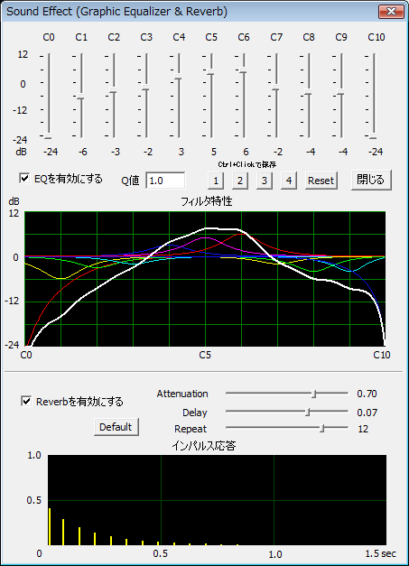

概要 TD-PSOLA画面 Phase Vocoder画面 Sound Effect画面 設定画面 問題と対策

TD-PSOLAまたはPhase Vocoder選択時に、「Effect」のボタンを押すと上の画面が表示されます。
（Graphic Equalizer）
画面の上半分は、Graphic Equalizer (EQ)
のコントロール画面です。
１１個あるスライダーは上に書いてあるC0〜C10のそれぞれの付近の音を強調あるいは抑圧することができます。スライダーを上にすると強調し、下にすると抑圧します。
その下のグラフは、各音に対する強調／抑圧の程度を表します。色の付いている線は各スライダーに対する特性で、白の太線が全体の特性を表します。
このイコライザーの特性を入力音声に適応して音声出力に反映するには、「EQを有効にする」のチェックを入れます。（チェックを入れないと音は変わりません。）
「EQを有効にする」のチェックを入れたまま、「閉じる」ボタンを押してこの画面を閉じると、イコライザーが入ったままの状態で音声出力され続けます。
「1」〜「4」のボタンを、Ctrlキーを押しながらマウスで左クリックすると、現在の設定値を保存します。次回からは、この数字のボタンをマウスで左クリックするだけで以前に設定した状態にすることができます。
「Q値」と書いてある欄の値を変えると、フィルタの急峻さが変わります。
このプログラムではGraphic EqualizerはTD-PSOLAでのピッチ検出の精度を高めるための前処理の役割を想定しています。
（Reverb）
画面の下半分は、Reverb（エコー）のコントロール画面です。
Reverb機能とは、エコーがかかったような音声にする機能です。
「Reverbを有効にする」のチェックを入れると、Reverb機能が働きます。
Reverbの掛かり方は、Attenuation, Delay, Repeat
の３つのスライダーで調節できます。
画面にはインパルス応答が表示されます。
「Default」のボタンを押すと、初期設定の条件に戻ります。
（処理の順序）
マイク／ファイル入力 ⇒ Graphic Equalizer ⇒ TD-PSOLA／Phase
Vocoder ⇒ Reverb ⇒ 音声出力
（注意）
Batch処理時には、Graphic EqualizerおよびReverbは掛かりません。